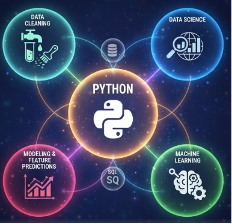
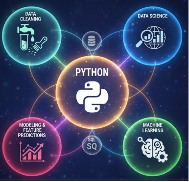

Modernized a legacy store-management workflow into a scalable RESTful service using Python and Flask-Smorest.
The system was containerized with Docker to ensure repeatable deployment, testing integrity, and environment consistency.
Federal relevance: Demonstrates modernization of static systems into secure, modular services
aligned with government AI and cloud-readiness initiatives.
Governance & Trust: Input validation, schema enforcement, documented endpoints,
and containerized testing ensure reliability and reproducibility.
 

End-to-end machine learning project using public health data to identify statistically significant
risk factors and generate predictive insights.
AI & Modernization: Transforms static datasets into predictive intelligence using
feature engineering and supervised learning.
VAULTIS Alignment:
Visible, documented datasets • validated features • reproducible notebooks • no PII • trustworthy outputs.
Leadership takeaway: Enables proactive intervention strategies rather than reactive reporting.

Analyzed U.S. government employment trends using Bureau of Labor Statistics data,
correcting time-series distortions through DAX and proper date modeling.
Federal relevance: Demonstrates responsible interpretation of workforce data
for policy and leadership briefing.
Executive insight: Identified non-cyclical hiring surges and explained their
budgetary and operational implications.

Built a complete ETL and analytical pipeline using core Python only,
demonstrating deep understanding of data structures and transformations.
Governance: Explicit handling of missing values, derived metrics,
and reproducible calculations ensure analytical trustworthiness.
Open to federal, public-sector, and mission-driven analytics opportunities.